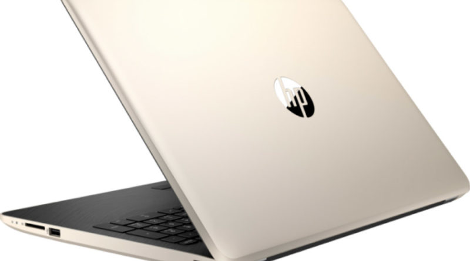

Xbox One
La Visión es la capacidad de ver más allá, en tiempo y espacio, y por encima de los demás, significa visualizar, ver con los ojos de la imaginación, en términos del resultado final que se pretende alcanzar.
leer más
Xbox Series
La principal diferencia entre misión y visión se encuentra en los tiempos hacia los que van enfocadas. La misión se centra en el objetivo para el presente, siendo inmediata, precisa y específica
leer más.
Pc Mac
Es sinónimo de destino, fin, meta. Objetivo es también alguien que se expresa sin que su manera de pensar o sentir influyan en sus ideas u opiniones. Es una persona imparcial o desapasionada. Por ejemplo: “Jorge trató de ser objetivo en sus comentarios”.
leer más
Pc Hp

Es sinónimo de destino, fin, meta. Objetivo es también alguien que se expresa sin que su manera de pensar o sentir influyan en sus ideas u opiniones. Es una persona imparcial o desapasionada. Por ejemplo: “Jorge trató de ser objetivo en sus comentarios”.